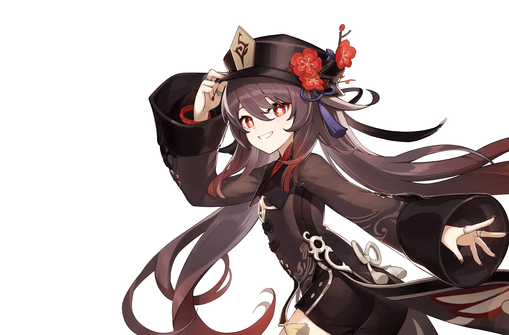
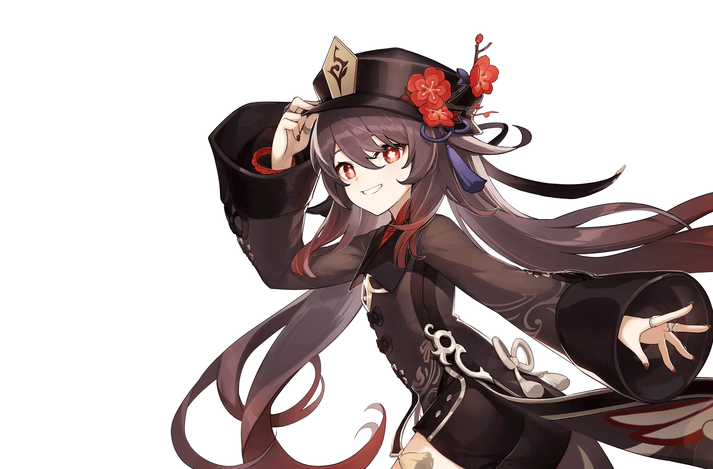
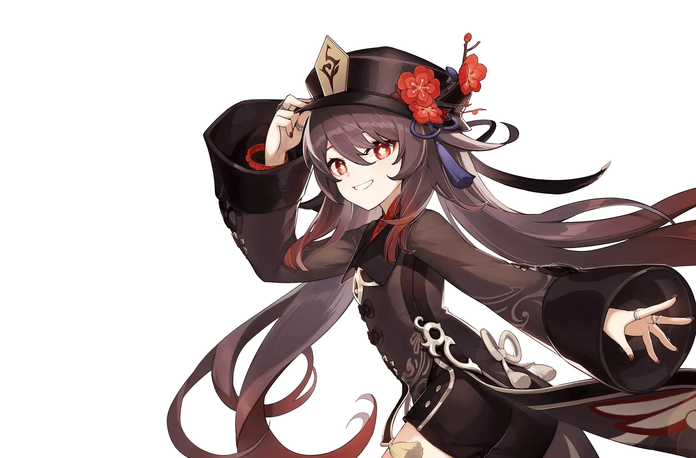
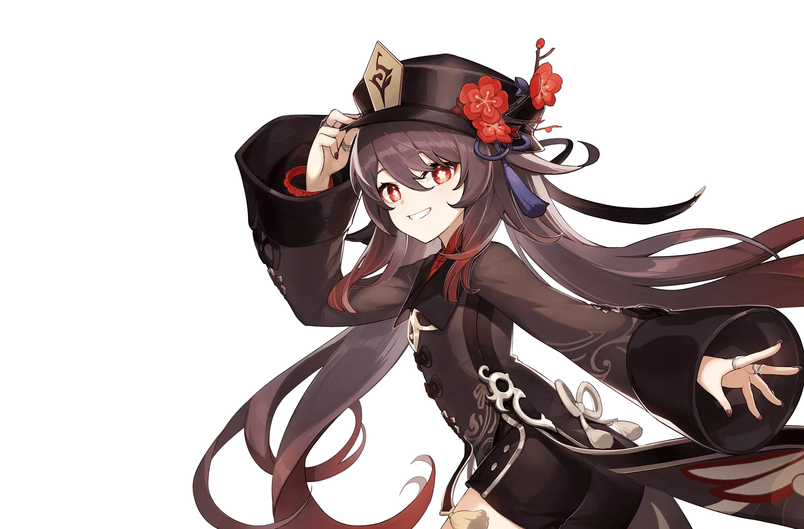

.png) 



 



adalah permainan peran aksi yang dikembangkan dan diterbitkan oleh miHoYo . Ini dirilis untuk Android , iOS , PlayStation 4 , dan Windows pada tahun 2020, di PlayStation 5 pada tahun 2021, dan akan dirilis di Nintendo Switch. Game ini menampilkan lingkungan dunia terbuka bergaya anime dan sistem pertarungan berbasis aksimenggunakan elemen sihir dan pergantian karakter.
Game ini gratis untuk dimainkan dan dimonetisasi melalui game gachamekanisme di mana pemain dapat memperoleh karakter dan senjata baru. Game dasar diperluas secara teratur melalui tambalan menggunakan game sebagai model layanan.
Konsep Permanian
Pemain dapat mengontrol karakternya dan melakukan tindakan seperti berlari, memanjat, berenang, dan meluncur, dibatasi oleh stamina.
Banyak node teleportasi ada di seluruh dunia yang dapat dibelokkan oleh pemain sebagai bentuk perjalanan cepat di antaranya adalah landmark yang dikenal sebagai Statues of The Seven yang dapat menyembuhkan dan menghidupkan kembali karakter, serta memberikan manfaat seperti meningkatkan stamina pemain.